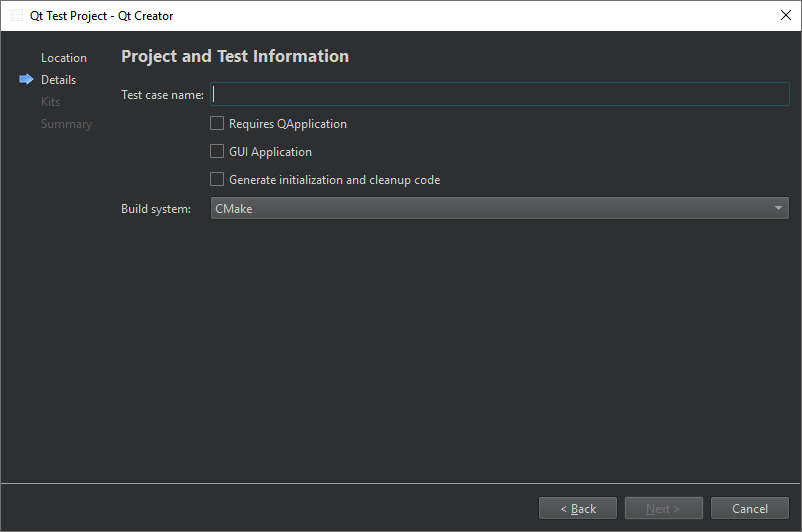

Create Qt tests
Qt Creator integrates the Qt Test framework for unit testing Qt applications and libraries.
Note: Running Qt tests and displaying their results is supported in Qt 5 or later.
To create a Qt test:
- Go to File > New Project > Test Project.
- Select Qt Test Project > Choose.
- In the Project and Test Information dialog, specify settings for the project and test.

- In Test case name, enter a name for the test case.
- Select Requires QApplication to add the include statement for QApplication to the
main.cppfile of the project. - Select GUI Application to create a Qt application.
- Select Generate initialization and cleanup code to add functions to your test that the testing framework executes to initialize and clean up the test.
- In Build system, select the build system to use for building the project: CMake, qmake, or Qbs. To build with CMake when developing with Qt 5 or Qt 6.4 or earlier, select CMake for Qt 5 and Qt 6.
Qt Creator creates the test in the specified project directory. Edit the .cpp file to add private slots for each test function in your test.
For more information about creating Qt tests, see Creating a Test.
Note: While scanning for tests, the parser takes into account only files that directly or indirectly include QTest or QtTest or its equivalent QtTest/qtest.h and get linked against QTestLib when building the project. Files that currently will not be built will be ignored.
Note: If General > Process arguments is enabled, you can execute tests and write one or more additional log files in parallel. Use the output format option -o filename,format to do so. Using standard out for filename is not allowed as Qt Creator is using this output channel.
See also How To: Test, Select the build system, Testing, Test Results, and Logging Options.